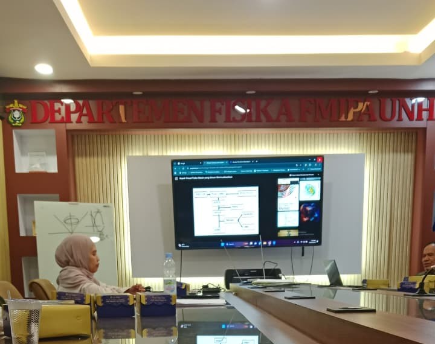

Selamat Datang di Laboratorium Fisika Teori dan Komputasi
Laboratorium kami merupakan pusat penelitian dan pengembangan dalam bidang fisika teori dan komputasi. Kami berfokus pada penggalian konsep fisika mendalam dan penerapannya melalui simulasi komputasi untuk memecahkan masalah kompleks.
Theoretical and Computational Physics
Kelompok Keahlian Fisika Teoritis dan Komputasi mencakup dua bidang, yaitu fisika teori dan fisika komputasional. Kegiatan kelompok keahlian ini meliputi diskusi antara mahasiswa dan dosen setiap minggu. Diskusi tersebut membahas program kreativitas mahasiswa, pengenalan bahasa pemrograman, dan pengenalan penelitian mahasiswa.
Laboratorium Fisika Teori dan Komputasi menaungi berbagai kegiatan penelitian yang dilakukan oleh dosen dan mahasiswa. Penelitian dosen berfokus pada pengembangan teori dan metode komputasi dalam berbagai bidang fisika.
📊 Statistik Research
8+
Proyek Research
5
Dosen Peneliti
15+
Mahasiswa Terlibat
3
Bidang Fokus
Research Dosen Fisika Teori dan Komputasi
Penelitian yang dilakukan oleh dosen-dosen laboratorium mencakup berbagai bidang fisika teori dan komputasi.
cosmology
Mekanisme Chameleon Pada Model Skalar Tensor Brans-Dicke
Penelitian tentang mekanisme chameleon dalam konteks teori Brans-Dicke dan implikasinya terhadap kosmologi dan fisika gravitasi.
AS
Dr. Azwar Sutiono, M.Si.
Dosen Fisika Teori
🟢 Sedang Berjalan📅 2023-2025
GravitasiKosmologiTeori Medan
Research Mahasiswa
Penelitian mahasiswa dalam bentuk tugas akhir (skripsi) yang berorientasi pada penerapan konsep teoretis dan komputasional.
BIOFISIKA KOMPUTASI
Studi Perubahan Sifat Struktur dan Termodinamik Pelipatan Protein HP Menggunakan Simulasi Monte Carlo Dengan Algoritma Wang-Landau
Simulasi pelipatan protein model HP menggunakan algoritma Wang-Landau untuk memahami mekanisme termodinamika pelipatan protein.
M1
Musdalifah
Mahasiswa S1 Angkatan 2019
🔵 Selesai📅 2023
BiofisikaSimulasi Monte CarloProtein Folding
ASTROFISIKA
Klasifikasi Bintang RR Lyre/Cepheid/Mira Menggunakan Metode Naive Bayes
Klasifikasi jenis bintang variabel menggunakan algoritma machine learning Naive Bayes berdasarkan data fotometri.
M2
Ayu Lestari
Mahasiswa S1 Angkatan 2017
🔵 Selesai📅 2022
AstrofisikaMachine LearningKlasifikasi Bintang
ASTROFISIKA
Studi Laju Kehilangan Massa Pada Evolusi Bintang Red Supergiant (RSG)
Analisis proses kehilangan massa pada fase Red Supergiant dan implikasinya terhadap evolusi bintang masif.
Laboratorium Fisika Teori dan Komputasi menyelenggarakan berbagai kegiatan untuk meningkatkan kompetensi dan produktivitas penelitian mahasiswa dan staf.
Earth, Climate And Atmosphere as Complex System
Colloquium ini berjudul Earth, Climate And Atmosphere as Complex System yang dibawakan langsung oleh pihak BRIN Dr. Albertu Sulaiman
📅 22 Oktober 2025👥 18 Peserta

Colloquium Multi-Disiplin Fisika Teori
Colloquium ini dibawakan oleh 4 pemateri dari laboratorium fisika teori dengan materi sesuai konsentrasi peminatan: Condensed Matter Physics, Kosmologi, Komputasi, Fisika Partikel.
Laboratorium Fisika Teori dan Komputasi memiliki beberapa fokus penelitian utama yang menjadi konsentrasi pengembangan ilmu pengetahuan.
Condensed Matter Physics
Bidang ini mempelajari sifat-sifat kolektif materi pada wujud padat dan cair, terutama fenomena yang muncul dari interaksi banyak partikel. Adapun mata kuliah yang harus diambil meliputi Pengantar linux, mekanika kuantum, fisika teoritik bahan mampat, dan teori perubahan fasa.
Cosmology
Kosmologi mempelajari asal-usul, evolusi, dan struktur besar alam semesta. Kosmologi menggabungkan teori (relativitas umum) dengan komputasi numerik dan pengamatan astronom. Mata kuliah yang diambil meliputi Fisika Matematika III, mekanika kuantum, dan dinamika nonlinear
Particle Physics
Studi tentang partikel elementer—penyusun dasar materi dan gaya fundamental. Bidang ini mencakup: Model standar (quark,lepton, dan boson), interaksi fundamental. fisikan energi tinggi, dan pencarian fenomena baru seperti lepto quark dan dark matter. Adapun mata kuliah yang harus diambil di bidang penelitian ini yaitu Fisika matematika III, Mekanika kuantum, dan dinamika nonlinear.
Computation
Bidang ini menggunakan komputasi dan pemodelan numerik untuk menyelesaikan masalah fisika yang terlalu kompleks untuk metode analitik. Mata kuliah yang harus diambil adalah Pengantar linud dan pengantar pemrograman internet.
Kumpulan mata kuliah yang terkait dengan Laboratorium Fisika Teori dan Komputasi beserta referensi buku yang dapat diakses melalui Google Drive.
🎓 Program Akademik
Kami menawarkan berbagai mata kuliah yang mendukung pengembangan kompetensi dalam fisika teori dan komputasi
10+
Mata Kuliah
10+
Referensi Buku
6
Dosen Pengajar
100%
Akses Digital
🐧
Pengantar Linux
🟢 Pemula
FIS501Semester 52 SKS
⏰2 SKS
📖Praktikum
👨🏫Prof. Tasrief Surungan, M.Sc.
Mempelajari dasar penggunaan sistem operasi Linux, termasuk perintah terminal, manajemen file, permission, shell scripting, dan lingkungan kerja untuk komputasi ilmiah.
👨🏫Drs. Bansawang BJ, M.Sc. dan Drs. Azwar Sutiono, M.Si
Membahas perilaku partikel mikroskopik menggunakan prinsip probabilistik, fungsi gelombang, operator, serta persamaan Schrödinger untuk memahami dunia atom dan subatom.
👨🏫Bayu Dirgantara, S.Si., Ph.D. dan Drs. Azwar Sutiono, M.Si
Mendalami alat matematika lanjutan untuk fisika, seperti matriks tingkat lanjut, persamaan diferensial parsial, dan metode transformasi untuk menyelesaikan masalah fisika kompleks.
📖 Referensi Buku
Mathematical Methods for Physicists: A Concise Introduction
👨🏫Drs. Bansawang BJ, M.Sc. dan Drs. Azwar Sutiono, M.Si
Mempelajari gravitasi sebagai kelengkungan ruang-waktu menurut Einstein, termasuk tensor metrik, geodesik, dan penerapannya pada lubang hitam serta kosmologi
🌐
Pengantar Pemrograman Internet
⚡ Menengah
23H02130703Semester 52 SKS
⏰2 SKS
📖Praktikum
👨🏫Bayu Dirgantara, S.ST Ph.D
Membahas dasar pembuatan aplikasi web, termasuk HTML, CSS, JavaScript, konsep client–server, dan prinsip kerja internet.
📖 Referensi Buku
Mathematical Methods for Physicists: A Concise Introduction
👨🏫Prof. Dr. rer-nat Wira Bahari Nurdin dan Prof. Dr. Tasrief Surungan M.sc
Menganalisis sifat fisik material pada tingkat mikroskopik, seperti struktur pita energi, superkonduktivitas, magnetisme, dan fenomena kolektif pada sistem banyak partikel
🤖
Pembelajaran Mesin
⚡ Menengah
23H02131102Semester 52 SKS
⏰2 SKS
📖Praktikum
👨🏫Bayu Dirgantara, S.ST P.hd
Mempelajari teknik komputasi yang membuat komputer belajar dari data, meliputi supervised learning, unsupervised learning, dan penerapannya dalam analisis serta prediksi.